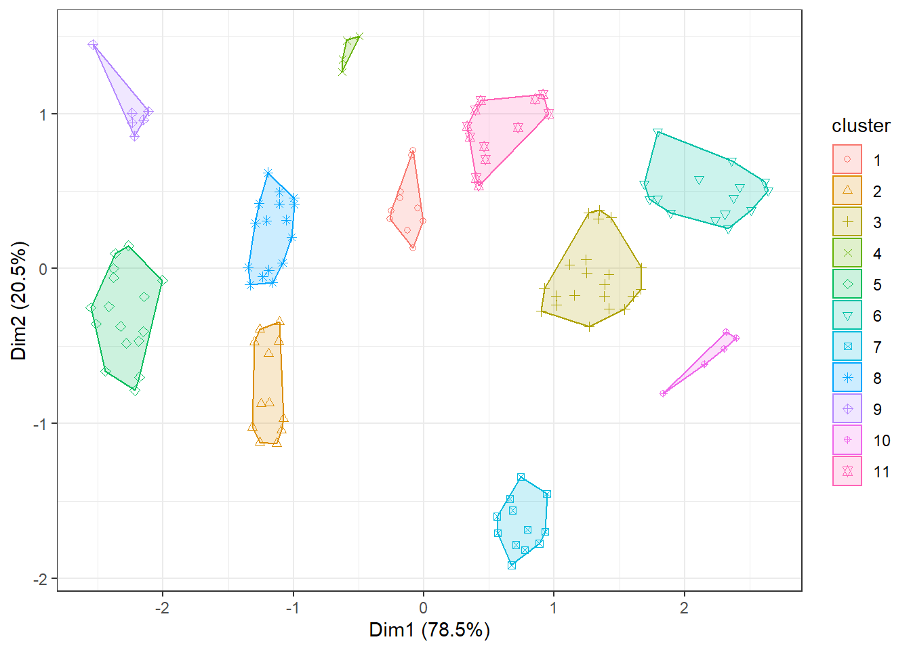
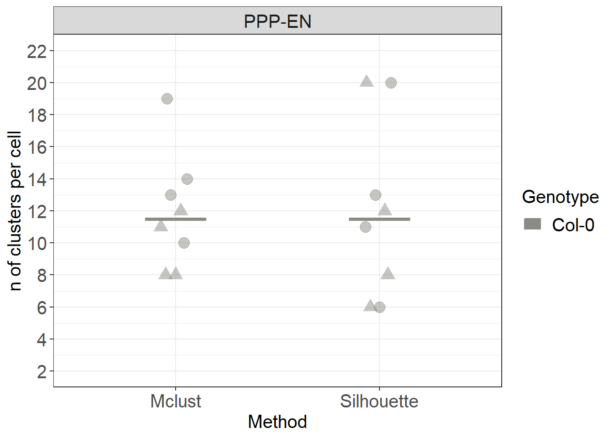
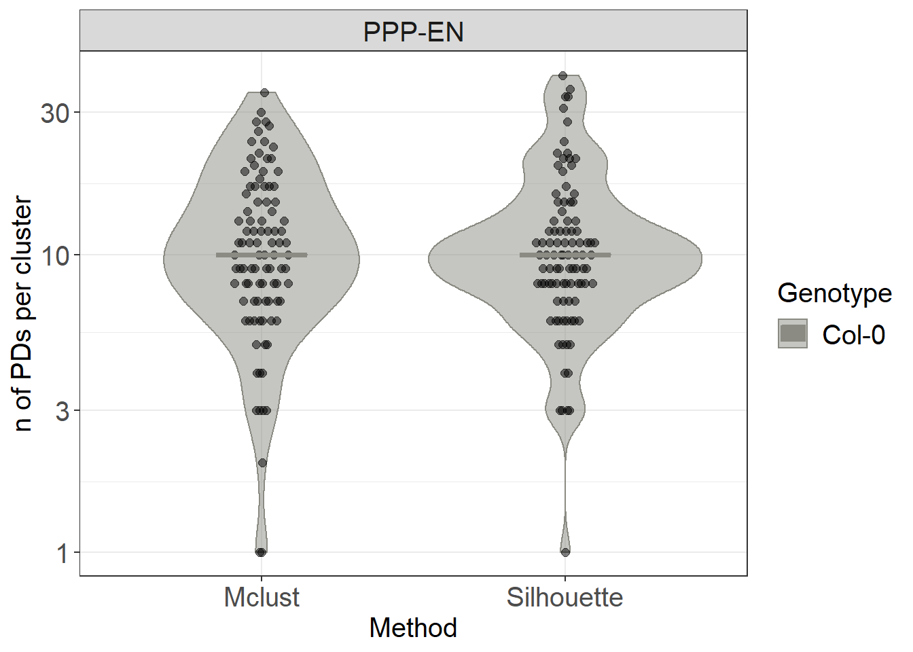

In this section we continue to ask questions about the distribution of Plasmodesmata (or similar types of annotations along a given model). We continue to use the output of the SpatialControlPoints plugin shown in the Distributions section. Since we detected a bias in the distribution of Plasmodesmata, strongly hinting at the presence of spatial clustering, we now ask: Can we quantify parameters relating to these clusters, such as their number
library(tidyverse)
library(factoextra)
# we are only going to use the coordinates of the real points in this case so we start from the Col_real object
# please note that this object is being carried over from the analysis that was performed in previous sections
# we need to look at each cell individually before we run the function described later on
# we filter the original file and we split the larger file into smaller datasets corresponding to different roots for example (easier to handle).
# we are going to duplicate the dataset column first (similar to what was done for the Col_0 object in previous section)
Col_real$Cell = Col_real$DatasetFilename
#in the dataset filename column we remove anything after _DNN
Col_real$DatasetFilename <- gsub("_PPP.*","", Col_real$DatasetFilename)
# in the column cell we remove anything before the name of the cell
Col_real$Cell <- gsub(".*PPP", "PPP", Col_real$Cell)
root_1 <- Col_real %>% filter(DatasetFilename == "170314_Col_HD_R20_339-381um_DNN")
root_2 <- Col_real %>% filter(DatasetFilename == "170821_Col_HD_R01_294-317um_DNN")
#FOLLOW THE ORDER IN THE FILE in which the cells are listed in the object file as the function used later follows such pattern!
PPP1_EN <- filter(root_1, Cell == "PPP1-EN")
# the same should be done for PPP1-Ena, PPP2-EN, PPP2-ENa)
# and then the same again for the second root
#The following piece of code has been copied from
# http://www.sthda.com/english/articles/29-cluster-validation-essentials/96-determining-the-optimal-number-of-clusters-3-must-know-methods/
# Silhouette method
fviz_nbclust(PPP1_EN[,c("X_units", "Y_units", "Z_units")], kmeans, method = "silhouette", nstart = 100, k.max=20) +
labs(subtitle = "Silhouette method")# this suggests 11 clusters based on the visual graph (dashed line)
#nstart is important as it repeats x times the initial random placement of the seeds, which can severely affect the definition of clusters
#kmax defines the maximum number of clusters, by default it is 10. Here we limit it below 20 as we belive it to be a reasonable number for the biological process being studied
# the problem is we can't store the plot output of the fviz_nbclust so we need to annotate the number of clusters
#root1
#11 PPP1-EN
#20 PPP1-ENa
#6 PPP2-EN
#13 PPP2-ENa
#root 2
#6 PPP1-EN
#8 PPP1a-EN
#20 PPP2-EN
#12 PPP2a-EN
# Assigning resulting best cluster value and see how it looks
# this can useful
# Run k-means clustering first
my_kmeans <- kmeans(PPP1_EN[,c("X_units", "Y_units", "Z_units")], 11, nstart = 100)
#visualise the output
fviz_cluster(my_kmeans, data = PPP1_EN[,c("X_units", "Y_units", "Z_units")], main=FALSE, show.clust.cent=FALSE, geom="point") + theme_bw()
library(broom)
library(mclust)
# we create a function that will calculate the number of clusters and/or append them to the object. For the silhouette method, because we can't extract directly the number of cluster from the image the command generates we need to manually supply a vector k containing the values for the grouping (that is why we explored the data above).
# MAKE SURE VECTOR NUMBERS ARE IN THE ORDER OF THE DATASET NAMES IN THE FILE
#we also use a second method that is fully automated
run_clustering <- function(data, k){
# the first part does the silhouette method
kmeans_result <- data %>%
select(X_units, Y_units, Z_units) %>%
kmeans(k, nstart = 100) %>%
#augment is part of the broom package, attaches to the original data an output of whatever you did before
augment(data)
# the second part uses an alternative clustering method that was suggested here at https://www.r-bloggers.com/finding-optimal-number-of-clusters/
# it is based on Bayesian approaches (although not taking advantage of it)
# this can be automated in the function described below and does not require inspection of the data
# the method requires the mclust library
#CAREFUL IT CONTAINS A MAP FUNCTION THAT CLASHES WITH THE dpr one so detach it after use (see below)
mclust_result <- data %>%
select(X_units, Y_units, Z_units) %>%
#kmax defines the maximum number of clusters, by default 10
mclust::Mclust(G = 1:20) %>%
augment(kmeans_result)
return(mclust_result)
}
root_1_clust <- root_1 %>% as_tibble() %>%
group_by(DatasetFilename, Cell) %>%
nest() %>%
mutate(k = c(11, 20, 6, 13)) %>%
mutate(kresult = map2(data, k, run_clustering)) %>%
select(-data) %>%
unnest(kresult)
root_2_clust <- root_2 %>% as_tibble() %>%
group_by(DatasetFilename, Cell) %>%
nest() %>%
mutate(k = c(6,8,20,12)) %>%
mutate(kresult = map2(data, k, run_clustering)) %>%
select(-data) %>%
unnest(kresult)
#IMPORTANT, detach the library as it has function conflicts
detach(package:mclust, unload = TRUE)
# we now merge the two objects
clusters <- rbind(root_1_clust, root_2_clust)#library(ggbeeswarm) called in the function so no need to load it
# we extract the number of clusters from the clusters object we generated
# the .cluster column contains the clustering output of the Silhouette method
clusters_sil <- clusters %>%
# get rows with distinct values of these variables (no duplicates)
distinct(Genotype, Interface, DatasetFilename, Cell, .cluster) %>%
# count how many rows for each of these two variables
count(Genotype, Interface, DatasetFilename, Cell) %>%
mutate(Method = "Silhouette")
# the .class column contains the clustering output of the mclust method
clusters_mc <- clusters %>%
# get rows with distinct values of these variables (no duplicates)
distinct(Genotype, Interface, DatasetFilename, Cell, .class) %>%
# count how many rows for each of these two variables
count(Genotype, Interface, DatasetFilename, Cell) %>%
mutate(Method = "Mclust")
clusters_count <- rbind(clusters_sil, clusters_mc)
clusters_count %>%
ggplot(aes(x= Method, y=n, colour= Genotype, fill= Genotype)) +
stat_summary(fun.y = median, fun.ymin = median, fun.ymax = median,
geom = "crossbar", size = 0.5, width = 0.3, alpha=1) +
# we use shape = to characterise the points according to which root (datset they belong to)
ggbeeswarm::geom_quasirandom(data= clusters_count, aes(shape=DatasetFilename, group=Genotype), size= 4, alpha=0.5, width=0.1, show.legend = FALSE, dodge.width = 0.9) +
labs(y = "n of clusters per cell") +
scale_color_manual(values=c("#8B8B83")) +
scale_fill_manual(values=c("#8B8B83")) +
facet_grid(~Interface) +
scale_y_continuous(limits= c(2,22), breaks = c(2,4,6,8,10,12,14,16, 18, 20, 22)) +
scale_shape_manual(values=c(19,17))
#library(ggbeeswarm) called in the function so no need to load it
#library(data.table) called in the function so no need to load it
# we count how many PDs are present in each cluster separately for the methods
silh_count <- clusters %>%
count(Genotype, Interface, DatasetFilename, Cell, .cluster) %>%
mutate(Method = "Silhouette")
mclust_count <- clusters %>%
count(Genotype, Interface, DatasetFilename, Cell, .class) %>%
mutate(Method = "Mclust")
# we then merge the counts
combined_count <- rbind(silh_count[,-5], mclust_count[,-5])
combined_count %>%
ggplot(aes(x= Method, y=n, colour= Genotype, fill= Genotype)) +
geom_violin(alpha=0.5) +
# we use this geometry from the ggbeeswarm package
ggbeeswarm::geom_quasirandom(data= combined_count, aes(group=Genotype), colour="black", fill="black", size= 2, alpha=0.5, width=0.1, show.legend = FALSE, dodge.width = 0.9) +
stat_summary(fun.y = median, fun.ymin = median, fun.ymax = median,
geom = "crossbar", size = 0.5, width = 0.3, alpha=1) +
labs(y = "n of PDs per cluster") +
scale_color_manual(values=c("#8B8B83")) +
scale_fill_manual(values=c("#8B8B83")) +
facet_grid(~Interface) +
# we use a log scale to better visualise the range of data
scale_y_log10()
# for visualisations purposes (in Imaris/Amira) it can be convenient to have the cluster assignment results generated in R as a file output
#set directory
setwd('./Data_individual_cells')
data.table::fwrite(clusters, "clusters.csv")Now that we established which clusters exist on the interfaces of interest we can move on to the next section